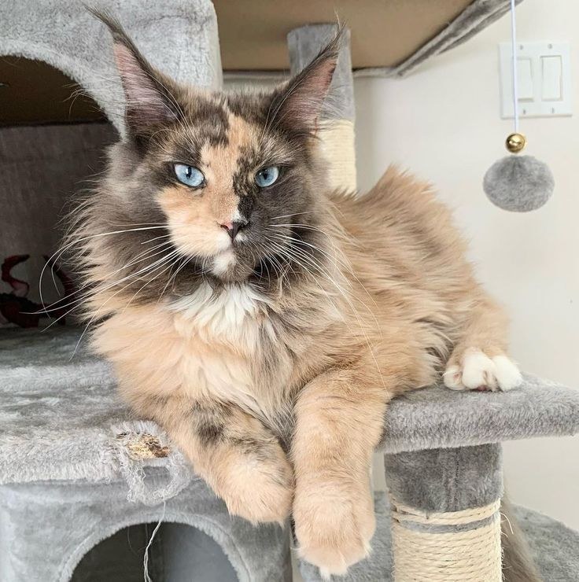
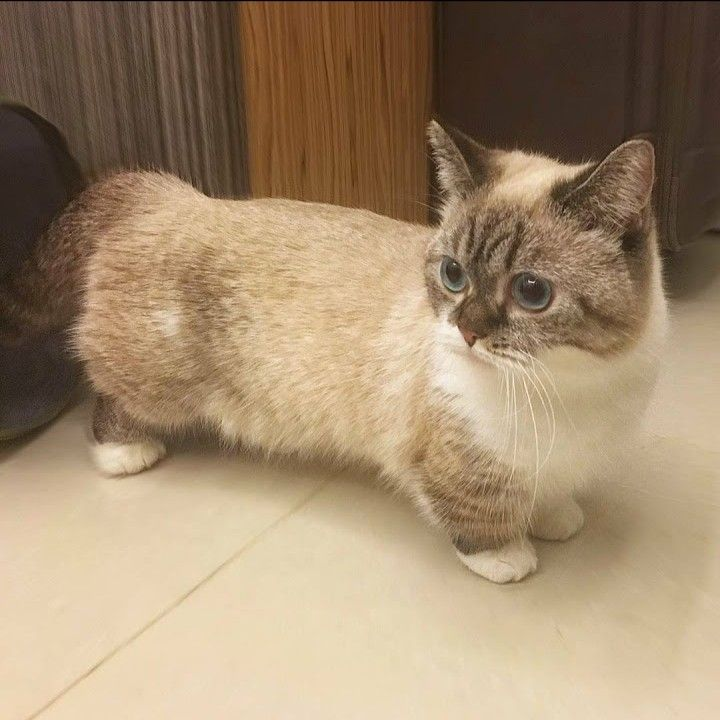

The Ragdoll is a breed of cat with a distinct colorpoint coat and blue eyes. Its morphology is large and weighty, and it has a semi-long and silky soft coat. American breeder Ann Baker developed Ragdolls in the 1960s. They are best known for their docile, placid temperament and affectionate nature.

MaineCoon Cat
1,000
Buyers : 9.7k+
Likes : 233k+
The Maine Coon is massive, but this breed is gentle and kind. The Maine Coon cat has existed in the U.S. since the 1800s and is considered the oldest native cat breed in the U.S. Rugged and solidly built, the Maine Coon cat is known for its massive size, shaggy coat, and large tufted ears reminiscent of a bobcat.

Munchkin Cat
1,500
Buyers : 13k+
Likes : 378k+
They are playful, outgoing and easy to train. They are very sociable and loving cats who make fantastic family pets as they get along well with children and other pets. Don't assume their small size prevents them from doing what cats do best – Munchkins can run and jump just like any other breed of cat.